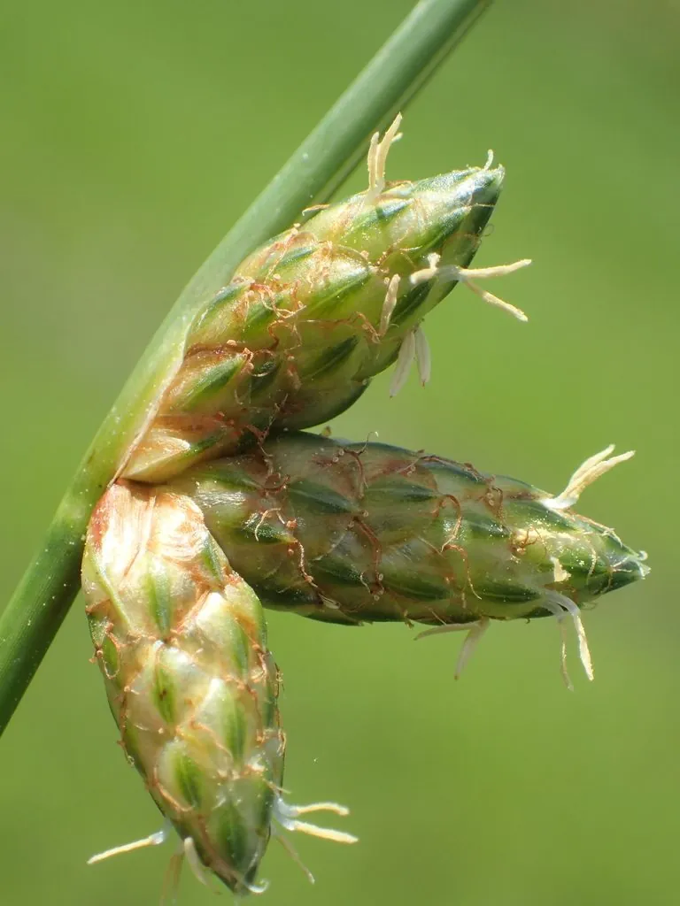

水生植物 · 植物界
萤蔺 Scirpus juncoides

莎草科藨草属多年生草本，茎丛生、圆柱形，花序侧生，生于水田与湿地，是稻田中十分常见的湿生植物。
- 分类
- 门被子植物门纲木兰纲目禾本目科莎草科属藨草属
- 栖息环境
- 水田、池塘边与沼泽湿地，喜浅水或湿润土壤
- 地理分布
- 中国、日本、朝鲜及东南亚；中国南北各地常见
- 保护级别
- IUCN 暂无评估；分布广，种群稳定
物种志
萤蔺为多年生草本，高 30–80 厘米，具短根状茎，茎丛生、圆柱形，表面光滑，内部具髓。叶片退化为叶鞘，仅基部具 1–2 枚膜质叶鞘，无明显的叶片。花序为聚伞状，假侧生，由数个穗状花序组成，小穗卵形，花小、淡绿色；果实为小坚果，倒卵形。
本种分布于中国、日本、朝鲜及东南亚，生于水田、池塘边与沼泽湿地，是稻田中常见的湿生植物。它茎圆柱形、叶片退化，靠光合作用的茎完成生长，外形像一根根绿色的灯心草。萤蔺对水分变化适应力强，既能在浅水中生长，也能在湿生土壤中存活；在水稻田中常被视为杂草。在浅水湿地中，它常与藨草、水葱等混生。其茎秆可用于编织与造纸。
形态与习性
- 株高30–80 厘米，茎丛生、圆柱形
- 叶退化为膜质叶鞘，无明显叶片
- 花期6–9 月，花序假侧生
- 光照喜光，也耐半阴
- 水分喜浅水或湿润土壤
- 土壤富含腐殖质的塘泥或水稻土
- 主要用途湿地绿化、茎秆编织与造纸
趣味知识
- 萤蔺的叶片完全退化成叶鞘，光合作用主要靠绿色的圆柱形茎完成。
- 它的花序看起来长在茎的侧面，其实顶端的茎继续生长，形成“假侧生”现象。
- 萤蔺是稻田常见的湿生植物，对水分变化有很强的适应力。
- 它的茎秆柔韧，民间曾用来编织草席与草帽。